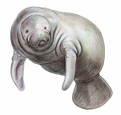
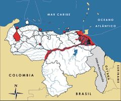

Trichechus manatus
| Manatí | |
|---|---|
|  | |
| Riesgo de extinción | |
En peligro crítico (UICN) | |
| Clasificación científica | |
| Reino: | Animalia |
| Filo: | Chordata |
| Clase: | Mammalia |
| Orden: | Sirenia |
| Familia: | Trichechidae |
| Género: | Trichechus |
| Especie: | Trichechus manatus |
| Nombre binomial | |
|
Trichechus manatus Linnaeus, 1758 | |
| Distribución | |
|
 Mapa de distribución de Trichechus manatus | |
Contenido
Información de Evaluación
- Categoría y Criterio Regional: En Peligro Crítico A2cde
- Fecha de Evaluación Regional: 2015
- Evaluadores: Jesús Morales-Campos y Ariany García-Rawlins
- Categoría y Criterio Global: Vulnerable C1
Justificación
Evaluaciones Previas
1999: En Peligro (EN)
2008: En Peligro Crítico (CR)
Información General
Nombres comunes
Manatí, vaca marina, manatí del Caribe, manatí antillano, Antillean manatee.
Notas taxonómicas
Sinónimos
Descripción
Sirénido corpulento que mide alrededor de tres metros y pesa entre 500 y 600 kg. Tiene un aspecto pisciforme, como un torpedo grueso, con aletas anteriores a manera de remos y una cola redondeada en forma de espátula. Todos estos rasgos son adaptaciones evolutivas de la especie al medio acuático. El dorso, la cabeza y el vientre son de color pardo grisáceo. Su piel es finamente arrugada, de 5 cm de espesor, cubierta por lo general de algas. Sus pequeños ojos son de visión limitada, pero su sistema auditivo está bien desarrollado. Es herbívoro y consume cada día entre 15 y 20% de su peso. La subespecie presente en Venezuela es Trichechus manatus manatus (Eisenberg 1989, Lefebvre et al. 1989, Linares 1998).
Distribución
Trichechus manatus se distribuye desde el sur de los Estados Unidos hasta la desembocadura del río Amazonas, en zonas costeras del mar Caribe y noreste de Suramérica, en las Antillas Mayores, en los ríos Sinú, Cauca y Magdalena en Colombia (Eisenberg 1989, Lefebvre et al. 1989, O'Shea et al. 1986, Emmons 1990, Reynolds y Odell 1991, Trujillo, F. et al. 2013). En Venezuela, hay poblaciones en el lago de Maracaibo, en el río Orinoco medio, bajo y en el delta, en Turuépano y caño La Brea, estado Sucre (Mondolfi 1974, Correa-Viana y O'Shea 1987, O'Shea et al. 1988, Correa-Viana et al. 1990, Castelblanco Martínez et al. 2005, Manzanilla Fuentes 2007, Ministerio del Ambiente 2007, Castelblanco Martínez et al. 2009, Lasso et al. 2010, Hoyt 2011, Rivas Rodríguez et al. 2012, Rodulfo 2012). Aunque no parece existir una población residente en las costas venezolanas, se ha reportado su presencia en Puerto Cabello, en la costa de Barlovento, y en la península de Paria (O'Shea et al. 1988, Boher et al. 1991, Boher y Porras 1991, Hoyt 2011).
- Sistema: Marino, Dulceacuícola
- Bioregión:
- Intervalo altitudinal (m): 20
- Endémica: No
Situación
Era más común en el pasado, y ha sido en gran medida la cacería lo que ha ocasionado su disminución (Project Mermaid 1992). Humboldt la señalaba como una especie abundante en los ríos Orinoco, Meta y Apure (Mondolfi 1974). Sin embargo, muchas poblaciones locales se han extinguido o han sufrido reducciones drásticas. En el lago de Maracaibo la situación es grave, pero se ha reportado un importante núcleo poblacional en el norte (Correa-Viana y O'Shea 1987, Correa-Viana et al. 1990, Manzanilla Fuentes 2007, Boede 2012). La cuenca del río Orinoco y sus adyacencias atlánticas del delta y del golfo de Paria constituyen el hábitat más extenso de su distribución mundial y hay evidencias de su presencia en esta zona (O'Shea et al. 1988, Lefebvre et al. 1989, Project Mermaid 1992, Castelblanco Martínez et al. 2005, Castelblanco Martínez et al. 2009, Hoyt 2011, Rivas Rodríguez et al. 2012, Rodulfo 2012). En el caño La Brea, podría encontrarse una de las mayores poblaciones de la especie, además se determinó la presencia de núcleos poblacionales en el Orinoco medio, bajo, desembocadura del río Caura y en el delta del Orinoco (Project Mermaid 1992, Bermúdez, R. et al. 2004, Castelblanco Martínez 2004, Castelblanco Martínez et al. 2005, Castelblanco Martínez et al. 2009, Rivas Rodríguez et al. 2012, Rodulfo 2012). A escala global se le considera Vulnerable de extinción (IUCN 2014). En Colombia se cataloga En Peligro Crítico (Rodríguez-Mahecha et al. 2006, Trujillo, F. et al. 2013).
- EOO (km2): Temporalmente sin información
- AOO (km2): Temporalmente sin información
- Tendencia Poblacional: Desconocida
Amenazas
Al tratarse de una especie de ciclo largo y de baja capacidad reproductiva, es muy vulnerable a la cacería persistente. La demanda se centra en el comercio de su carne, grasa, cuero y huesos (Mondolfi y Muller 1979, Lefebvre et al. 1989, Ojasti 1993). A mediados del siglo pasado su cacería llegó a ser muy intensa, pero en la actualidad parece estar disminuyendo (Mondolfi 1974, Mondolfi y Muller 1979, O'Shea et al. 1988, Correa-Viana et al. 1990). Entre otras amenazas se ha señalado su muerte en redes de pesca, colisiones con embarcaciones a motor, la alteración de su hábitat para la construcción de diques y represas, el drenado de humedales, la deforestación de bosques de mangle y la contaminación (O'Shea et al. 1988, Martínez, A. A. 1990, Manzanilla Fuentes 2007, Rivas Rodríguez et al. 2012, Rodulfo 2012, Boede et al. 2013).
Conservación
Se encuentra incluida en el Apéndice I de la Convención sobre el comercio internacional de especies amenazadas de fauna y flora silvestres (Cites 2014). En Venezuela, además de estar amparado por la Ley de protección a la fauna silvestre, desde 1978 se dictaron medidas especiales para evitar su cacería, que se ratificaron como veda indefinida en 1996 y posteriormente fue declarada Especie en Peligro de Extinción (Venezuela 1970, Venezuela 1978, Venezuela 1996a, Venezuela 1996b). Se desconoce si las subpoblaciones que se encuentran en el lago de Maracaibo, caño La Brea, golfo y península de Paria, Orinoco medio, bajo y su delta, puedan garantizar la permanencia de poblaciones viables en el largo plazo. Desde 1992, se ha recomendado a las autoridades nacionales proteger al caño La Brea bajo la figura de parque nacional o refugio de fauna, puesto que el área se encuentra dentro de la Reserva Forestal de Guarapiche (Mondolfi 1995). Se debe mencionar una nueva alternativa de conservación ex situ, de un programa de cría en cautiverio, que llevan a cabo dos zoológicos venezolanos (Boede 2012, Boede et al. 2013, Ovalle y Silva 2013). Igualmente, es importante insistir en el desarrollo de investigaciones básicas sobre la distribución, abundancia y tendencias poblacionales de la especie, además de realizar actividades de educación ambiental y reforzar las labores de guardería y control. El manejo de la Reserva de Biosfera del Delta de Orinoco representa un gran reto para la restauración y protección de la población existente (Mondolfi 1995, Pnuma 1995, Rodríguez, J. P. y Rojas-Suárez 2008, Rodulfo 2012).
Autorías
Autores originales
Ernesto O. Boede, Arnaldo Ferrer-Pérez, Adda G. Manzanilla Fuentes, Fernando Trujillo, Omar Hernández, Wlodzimierz Jedrzejewski y Tito Barros
Colaboradores
Ilustrador
Astolfo Mata
Referencias
- Bermúdez, R., Castelblanco-Martínez, D. N. y Trujillo, F. (2004). Patrones de presencia y uso diferencial del hábitat de Trichechus manatus manatus en el río Orinoco dentro de la zona de influencia de Puerto Carreño, Vichada. Páginas: 133-158. En: Diazgranados, M. C. y Trujillo, F. (Eds.). Fauna acuática de la Orinoquia colombiana. Fundación Cultural Javeriana de Artes Gráficas (Javegraf). Bogotá, Colombia.
- Boede, E. O. (2012). El Manatí en los últimos dos siglos en Venezuela. Natura. Sociedad de Ciencias Naturales La Salle. Versión online. Disponible en www.natura-digital.com/index.php/javascript/historia-natural/94-fauna/184-el-manati-en-los-ultimos-dos-siglos-en-venezuela, consultada el 07 abril 2015.
- Boede, E. O., Ferrer-Pérez, A., Manzanilla Fuentes, A. G., Trujillo, F., Hernández, O., Jedrzejewski, W. y Barros, T. (2015). Manatí, Trichechus manatus. En: J.P. Rodríguez, A. García-Rawlins y F. Rojas-Suárez (eds.) Libro Rojo de la Fauna Venezolana. Cuarta edición. Provita y Fundación Empresas Polar, Caracas, Venezuela. Recuperado de: animalesamenazados.provita.org.ve/content/manati-0 Lun, 19/03/2018 - 14:18
- Boede, E. O., Mujica Jorquera, E. y Bolaños Jiménez, J. (2013). Capturas de manatíes Trichechus manatus, (Linnaeus, 1758) en Venezuela y propuesta para su conservación ex situ. X Congreso Venezolano de Ecología, 18-22 de noviembre. Mérida, Venezuela.
- Boher, S. y Porras, J. (1991). Nuevos registros del manatí Trichechus manatus, en la costa del mar Caribe venezolano. Acta Científica Venezolana 42 (Supl. 1): 287.
- Boher, S., Smith, R. y Rengifo, A. (1991). Nuevo registro de manatí Trichechus manatus Linneus 1758 (Mammalia, Sirenia) en la costa oriental venezolana. Serie Informes Técnicos del Servicio Autónomo Profauna. Profauna, MARNR. Caracas. 15 pp.
- Cites. (2014). Apéndices I, II y III (válidos desde el 14 de septiembre de 2014). Convención sobre el Comercio Internacional de Especies Amenazadas de Fauna y Flora Silvestres (CITES). 47 pp.
- Correa-Viana, M. y O'Shea, T. S. (1987). Distribución y status del manatí (Trichechus manatus) en Venezuela. 116 pp. En: Memorias de la sexagésima segunda reunión de la Comisión de Supervivencia de Especies SSC-IUCN. Caracas: MARNR, Fudena, UICN.
- Correa-Viana, M., O'Shea, T. S., Ludlow, M. E. y Robinson, J. G. (1990). Distribución y abundancia del manatí, Trichechus manatus en Venezuela. Biollania 7: 101-123.
- Eisenberg, J. F. (1989). Mammals of the Neotropics. The Northern Neotropics (Vol. 1). Panamá, Colombia, Venezuela, Guyana, Suriname, French Guiana. University of Chicago Press. Chicago y Londres. 449 pp.
- Emmons, L. H. (1990). Neotropical Rainforest Mammals, a field guide. University of Chicago Press. Chicago y Londres. 281 pp.
- Hoyt, E. (2011). Protected Areas For Whales, Dolphins and Porpoises (Second Edition). Earthscan. Nueva York. 241 pp.
- IUCN (2014). The IUCN Red List of Threatened Species. Version 2014.3. Accesible en www.iucnredlist.org.
- Lasso, C. A., Usma, J. S., Trujillo, F. y Rial, A. (2010). Biodiversidad de la Cuenca del Orinoco. Instituto de Investigaciones de Recursos Biológicos Alexander von Humboldt, WWF Colombia, Fundación Omacha, Fundación La Salle de Ciencias Naturales e Instituto de Estudios de la Orinoquía-UNC. Bogotá. 609 pp.
- Lefebvre, L. W., O'Shea, T. J., Rathbun, G. B. y Best, R. C. (1989). Distribution, status, and biogeography of the West Indian manatee. Páginas: 567-610. En: Woods, C. A. (Ed.). The Biogeography of the West Indies: Past, Present and the Future. Sandhill Crane Press. Gainesville, Florida.
- Linares, O. J. (1998). Mamíferos de Venezuela. Sociedad conservacionista Audubon. Caracas. 691 pp.
- Manzanilla Fuentes, A. G. (2007). Estado actual de la población de manatíes Trichechus manatus en la Bahía del Tablazo, estado Zulia, Venezuela. Tesis M. Sc., UNELLEZ. Guanare. 113 pp.
- Ministerio del Ambiente. (2007). Listado preliminar de la fauna del Refugio de Fauna Silvestre y Zona Protectora de la Tortuga Arrau. Orinoco Medio-Edos. Apure y Bolívar. Serie de Informes Técnicos ONDB CNCRG/IT/425. Maracay.
- Mondolfi, E. (1974). Taxonomy, distribution and status of the manatee in Venezuela. Memoria de la Sociedad de Ciencias Naturales La Salle 34(97): 5-23.
- Mondolfi, E. (1995). Plan de Acción para la Investigación y Protección del Manatí Trichechus manatus en Venezuela. Páginas: 97-108. En: Delfines y Otros Mamíferos Acuáticos de Venezuela. Una Política para su Conservación. FUDECI. Caracas, Venezuela.
- Mondolfi, E. y Muller, C. (1979). Investigación y conservación del manatí en Venezuela. Informe (mimeografiado). Fudena. Caracas. 53 pp.
- Ojasti, J. (1993). Utilización de la fauna silvestre en América Latina: Situación y perspectivas para un manejo sostenible. Guía FAO Conservación Nº 25. FAO. Roma: 248 pp.
- O'Shea, T. J., Correa-Viana, M., Ludlow, M. y Robinson, J. (1986). Distribution and status of the West Indian Manatee in Venezuela. Insternational Union for the Conservation of Nature. Contract Report. 102 pp.
- O'Shea, T. J., Correa-Viana, M., Ludlow, M. y Robinson, J. (1988). Distribution, status and traditional significance of the West Indian manatee Trichechus manatus in Venezuela. Biological Conservation 46: 281-301.
- Ovalle, L. y Silva, C. (2013). Programa de reproducción ex situ del Manatí Trichechus manatus manatus en el Parque Zoológico Bararida, Barquisimeto, Venezuela. X Congreso Venezolano de Ecología, 18-22 de noviembre. Mérida, Venezuela.
- Reynolds, J. E. y Odell, D. K. (1991). Manatees and Dugongs. Library of Congress Cataloging-in-Publication Data. Nueva York, EEUU: 36-62.
- Project Mermaid. (1992). Proposal for Future Work. Newcastle University Venezuela Expedition 1992. Project Mermaid. Informe (mimeografiado). 21 pp.
- Rivas Rodríguez, B., Ferrer Pérez, A. y Colonnello, G. (2012). Distribución, uso de hábitat y status poblacional del manatí Trichechus manatus en el tramo central del bajo Orinoco, Venezuela. Memoria de la Fundación La Salle de Ciencias Naturales. 173-174.
- Rodríguez-Mahecha, J. V., Alberico, M., Trujillo, F. y Jorgenson, J. (Eds.) (2006). Libro Rojo de los Mamíferos de Colombia. Serie Libros Rojos de Especies Amenazadas de Colombia. Conservación Internacional, Ministerio del Ambiente, Vivienda y Desarrollo Territorial. Bogotá, Colombia. 433 pp.
- Rodríguez, J. P. y Rojas-Suárez, F. (1999). Libro Rojo de la Fauna Venezolana, segunda edición. PROVITA, Fundación Polar. Caracas. 444 pp.
- Rodríguez, J. P. y Rojas-Suárez, F. (Eds.) (2008). Libro Rojo de la Fauna Venezolana, tercera edición. Provita y Shell Venezuela, S. A. Caracas, Venezuela. 364 pp.
- Rodulfo, S. C. (2012). Distribución, alimentación y amenazas a las que está siendo sometido el manatí antillano Trichechus manatus manatus (Linnaeus 1758) en el Caño Araguao, Reserva de Biosfera Delta del Orinoco. Trabajo de Grado, Universidad de Oriente. Nueva Esparta, Venezuela. 80 pp.
- Trujillo, F., Gärtner, A., Caicedo, D. y Diazgranados, M. C. (Eds.) (2013). Diagnóstico del estado de conocimiento y conservación de los mamíferos acuáticos en Colombia. Ministerio de Ambiente y Desarrollo Sostenible, Fundación Omacha, Conservación Internacional y WWF Bogotá. 312 pp.
- Venezuela. (1970). Ley de Protección a la Fauna Silvestre. Gaceta Oficial No. 29289 del 11 de agosto de 1970. Caracas.
- Venezuela. (1978). MARNR. Resolución Nº 127 del 08/09/78: Veda total para la caza del manatí. Ministerio del Ambiente y de los Recursos Naturales Renovables (MARNR). En: Gaceta Oficial Nº 31.570 (12 sep. 1978). Caracas, Venezuela.
- Venezuela. (1996a). Decreto 1485: Animales Vedados para la Caza. Gaceta Oficial No. 36.059 - 7 de octubre de 1996. Caracas.
- Venezuela. (1996b). Decreto 1486: Especies en Peligro de Extinción. Gaceta Oficial No. 36.062- 10 de octubre de 1996. Caracas.